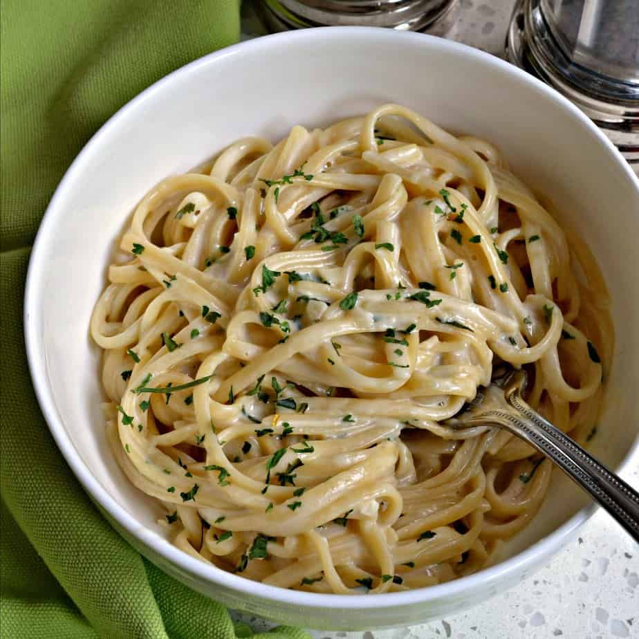

Creamy Garlic Parmesan Pasta

Description
This creamy garlic parmesan pasta is a comforting and flavorful dish that's perfect for a cozy dinner at home. The creamy sauce infused with garlic and parmesan cheese coats each strand of pasta beautifully.
Ingredients
- 8 oz (225g) linguine or fettuccine pasta
- 2 tbsp butter
- 4 cloves garlic, minced
- 1 cup heavy cream
- 1 cup grated parmesan cheese
- Salt and pepper to taste
- Fresh parsley, chopped (optional, for garnish)
Steps
- Cook the pasta according to package instructions until al dente. Drain and set aside.
- In a large skillet, melt the butter over medium heat. Add the minced garlic and sauté for about 1-2 minutes until fragrant.
- Pour in the heavy cream and bring to a simmer. Let it cook for 5 minutes, stirring occasionally.
- Gradually add the grated parmesan cheese, stirring constantly until the cheese is melted and the sauce is smooth.
- Season with salt and pepper to taste.
- Add the cooked pasta to the skillet and toss until well coated with the sauce.
- Serve hot, garnished with chopped fresh parsley if desired.
Go back to the homepage